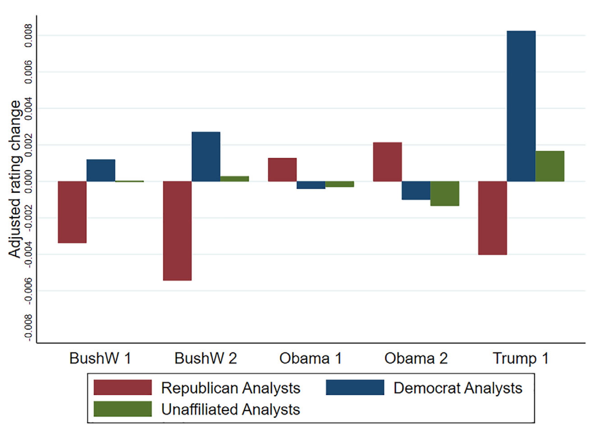

|
June 9, 2024 Finance professionals don't check their political identities at the door As Europe heads to the polls, I would like to talk about an overlooked link between finance and politics. It has become a commonplace idea that rising political polarization causes people with differing affiliations to view the world through distinct lenses and even believe in different facts. Recent research shows that the financial industry is not immunized against partisan screens; finance professionals, too, carry their political identities into their work. Let me take you through a tour of this research! Political science research shows that people stick to a political identity that solidifies in early adulthood and that acts as a perceptual screen through which people interpret the world. Numerous researchers have taken this hypothesis to the data and confirmed its relevance. For instance, Americans who identify themselves as Democrats tend to assess positively the economic conditions of the U.S. when the president is a Democrat and negatively when the president is a Republican. People who identify as Republicans do the opposite. What is striking is that people with different political affiliations make opposite assessments of economic conditions not only prospectively, when a new president comes in, but also retrospectively, after the presidency is over. In other words, people disagree not only in their predictions but also on the facts. Financial decisions influenced by political affiliation You might think, OK, people disagree when it comes to arguing about politics, but when it comes to making decisions with important financial implications, political affiliation remains at bay. This is not what the data reveal, however. After Trump’s 2016 election, Republican households increased their investments in the U.S. stock market. Meeuwis et al. (2022) trace this behavior to the fact that Republicans interpreted the Trump election as good news for the US economy and therefore were more eager to invest in stocks – whereas Democrats followed the opposite reasoning and refrained from buying stocks. In a nutshell, people fall to their political affiliation in making financial decisions. Finance professionals fall to their political beliefs What is more surprising is that finance professionals fall to their political affiliation too. Credit analysts give lower ratings to U.S. corporations when the U.S. administration is not aligned with their political affiliation. Kempf and Tsoutsoura (2021) show that the same company initially rated BBB by two credit rating agencies is likely to be downgraded by a rating agency whose lead credit analyst covering the company is a Democrat, whereas another rating agency whose lead credit analyst covering the company is a Republican does change its rating on average. The figure below illustrates the phenomenon. During Republican presidencies (BushW and Trump), Democrat analysts downgrade U.S. companies’ ratings (low ratings are coded as higher values on the graph). During Obama’s presidency, this is the opposite and Republican analysts downgrade ratings. The larger effect happens for Trump’s presidency – arguably the most polarizing one. The phenomenon extends to investment flows. Kempf et al. (2023) show that international mutual funds are more likely to invest in countries whose government is aligned with the political views of the fund manager. In the same vein, a number of U.S. banks make – and are required to disclose – political contributions. This information can be used to assign a political affiliation to banks. Kempf et al. (2023) show that U.S. banks are more likely to invest in countries whose government is aligned with the political affiliation revealed by their political contributions. Conclusion Go and vote today! And ask yourself how your economic choices are affected by your political views. Sources |